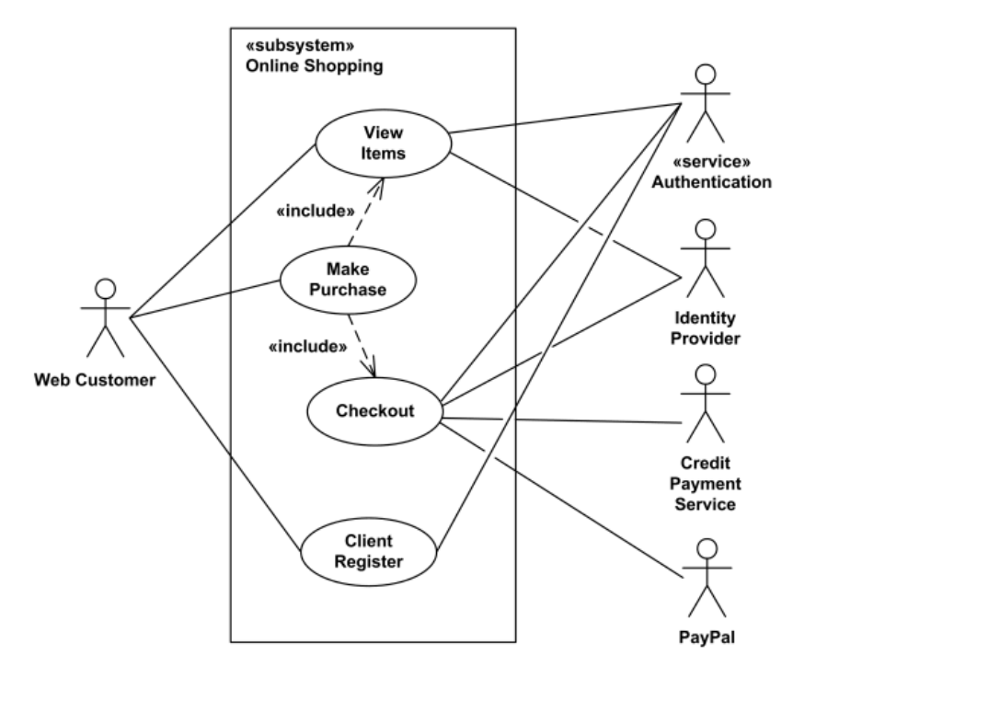
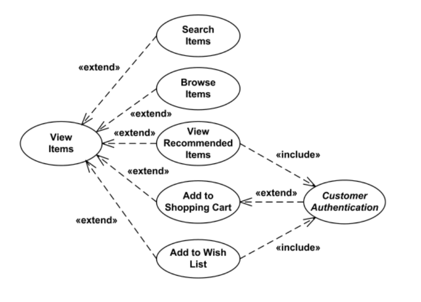
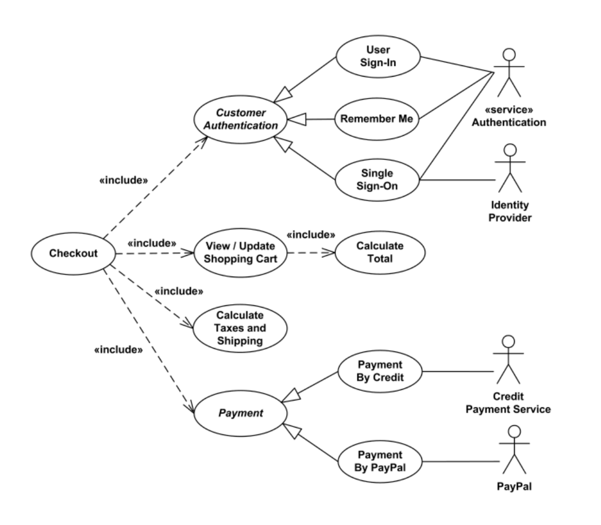
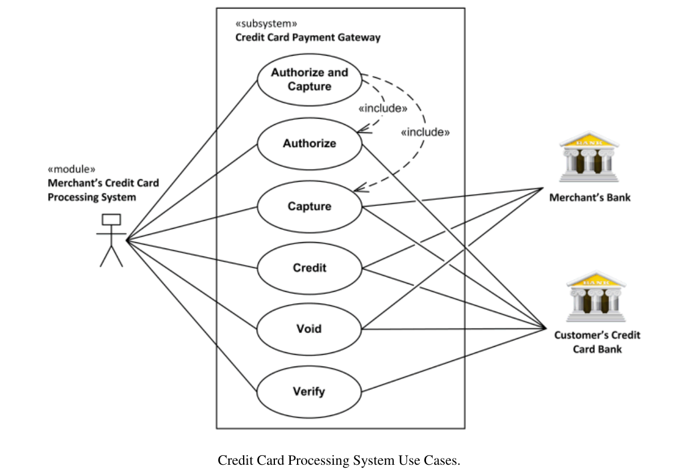
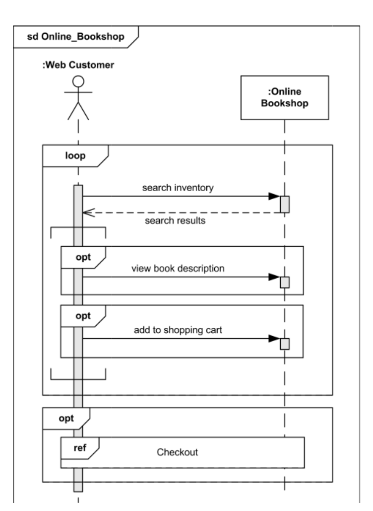
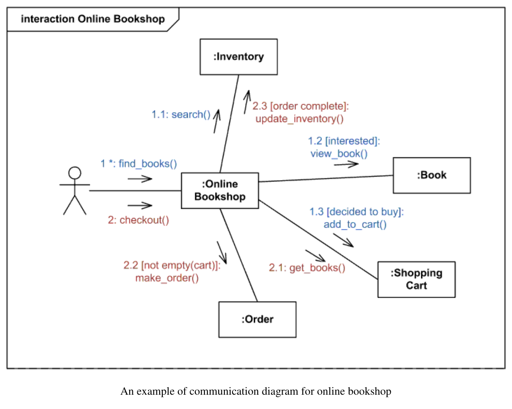
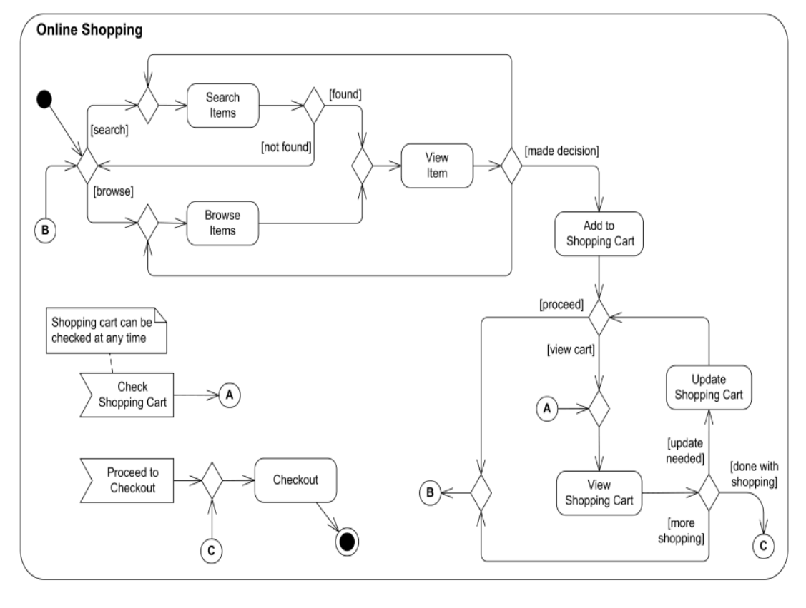
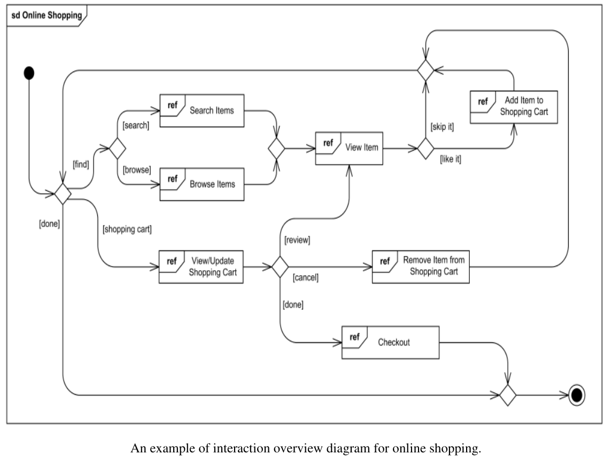
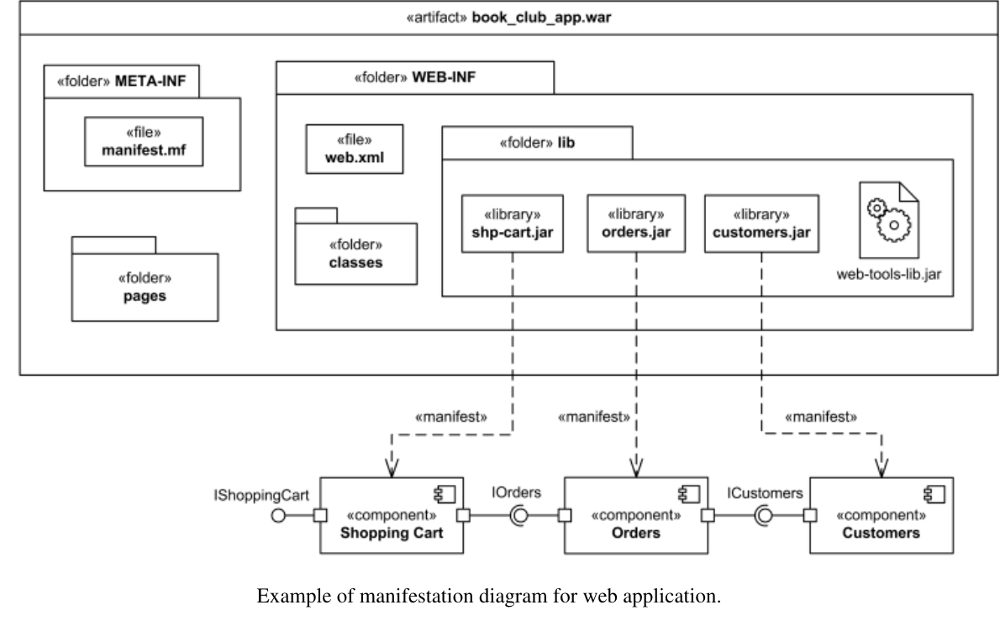

Kỹ nghệ hệ thống Trí tuệ nhân tạo
Lab 02: Thực hành biểu đồ UML
Trường ĐH Công nghệ - Đại học Quốc gia Hà Nội
Giảng viên: Lương Sơn Bá, Nguyễn Tiến Đạt
Nội dung
- UML dùng để làm gì trong lab?
- Đọc mô hình Online Shopping và Payment Gateway
- Vẽ hành vi và tương tác hệ thống
- Object, component, manifestation và deployment
- Nộp bài thực hành
1.
UML dùng để làm gì trong lab?
Mục tiêu buổi thực hành
Đọc mô hình
- Xác định actor, use case, boundary
- Đọc lớp, quan hệ và bội số
- Theo dõi thứ tự thông điệp
Vẽ mô hình
- Chọn đúng loại biểu đồ
- Giữ mỗi biểu đồ một mục đích rõ
- Giải thích được quyết định thiết kế
UML là gì?
- Trong OOAD, UML giúp mô hình hóa cách các thành phần tương tác với nhau.
- UML có nhiều loại sơ đồ, thường chia thành cấu trúc và hành vi.
- Trong lab, UML là công cụ để suy nghĩ trước khi code.
Vì sao UML quan trọng?
Chuẩn hóa giao tiếp
- Developer quan tâm class, API, service.
- Data Scientist quan tâm model và data flow.
- MLOps Engineer quan tâm deployment và infrastructure.
- Business Analyst quan tâm use case.
Giảm rủi ro trước khi code
- Phát hiện thiếu requirement.
- Phát hiện dependency phức tạp.
- Tránh circular dependency.
- Nhìn sớm bottleneck kiến trúc.
Sửa lỗi ở giai đoạn design thường rẻ hơn nhiều so với sửa sau khi đã triển khai.
AI system không chỉ là một mô hình ML
Pipeline đầy đủ trong tài liệu
Data ingestion
Thu thập dữ liệu từ nguồn vào.
Data preprocessing
Làm sạch, chuẩn hóa, chuẩn bị dữ liệu.
Feature engineering
Tạo đặc trưng phục vụ học máy.
Model training
Huấn luyện và đánh giá model.
Model serving
Đưa model vào luồng phục vụ dự đoán.
Monitoring
Theo dõi dữ liệu, chất lượng và vận hành.
Feedback loop
Thu phản hồi từ người dùng/hệ thống.
Retraining
Cập nhật model khi dữ liệu hoặc yêu cầu đổi.
UML giúp xác định boundary giữa module và thiết kế pipeline rõ ràng.
Tài liệu hóa hệ thống
Trong thực tế
- Nhân sự thay đổi.
- Model được nâng cấp.
- Kiến trúc phát triển theo thời gian.
Nếu thiếu thiết kế
- Người mới mất nhiều thời gian hiểu hệ thống.
- Refactor trở nên rủi ro.
- Audit AI system khó khăn.
Tách biệt Design và Implementation
UML giúp
- Tập trung vào abstraction.
- Không bị lệ thuộc framework.
- Không bị ràng buộc bởi ngôn ngữ lập trình.
Design tốt có thể
- Triển khai bằng Python.
- Triển khai bằng Java.
- Hoặc tách thành microservices.
Design không nên phụ thuộc implementation.
Hai nhóm biểu đồ cần nhớ
| Nhóm | Câu hỏi chính | Ví dụ trong lab |
|---|---|---|
| Structural Diagrams Sơ đồ cấu trúc |
Hệ thống gồm thành phần nào? Quan hệ giữa chúng là gì? | Class, Object, Component, Deployment |
| Behavioral Diagrams Sơ đồ hành vi |
Hệ thống hoạt động ra sao theo thời gian? | Use Case, Sequence, Communication, Activity |
Trong bài thực hành, chọn biểu đồ theo câu hỏi cần trả lời.
Vì sao chia hai nhóm?
Hệ thống là gì?
- Những thành phần nào tồn tại?
- Quan hệ giữa chúng là gì?
- Ai phụ thuộc vào ai?
Hệ thống hoạt động thế nào?
- Khi có sự kiện thì điều gì diễn ra tiếp?
- Luồng xử lý đi qua các bước nào?
- Trạng thái đổi ra sao theo thời gian?
Hai nhóm biểu đồ phản ánh hai cách con người tư duy về hệ thống.
Structural Diagrams trong tài liệu
| Biểu đồ | Mô tả | Ví dụ trong PDF |
|---|---|---|
| Class Diagram | Lớp, thuộc tính, phương thức và quan hệ. | Customer, Account, Shopping Cart, Order, Payment, Product. |
| Object Diagram | Snapshot đối tượng tại một thời điểm. | Login Controller, User Manager, Cookie Manager, Logger. |
| Component Diagram | Thành phần phần mềm và cách chúng giao tiếp. | Search Engine, Shopping Cart, Authentication, Orders. |
| Deployment Diagram | Phần mềm được triển khai trên phần cứng/server. | Apache Tomcat, Application Server, Database Server. |
Behavioral Diagrams trong tài liệu
| Biểu đồ | Mô tả | Ví dụ trong PDF |
|---|---|---|
| Use Case Diagram | Actor bên ngoài và mục tiêu khi tương tác với hệ thống. | View Items, Client Register, Make Purchase, Checkout. |
| Sequence Diagram | Trình tự thông điệp theo thời gian. | Khách hàng tìm sách, xem mô tả, thêm vào giỏ, checkout. |
| Communication Diagram | Đối tượng liên kết và trao đổi dữ liệu với nhau. | Online Bookshop, Inventory, Book, Shopping Cart, Order. |
| Activity / Interaction Overview | Workflow và tổng quan các tương tác. | Search/Browse, View Item, Add/Remove Cart, Checkout. |
Khi nào cần UML?
Nên dùng UML khi
- Hệ thống hướng tới production.
- Có nhiều người cùng phát triển.
- Cần bảo trì lâu dài.
- Có deployment và monitoring.
Có thể bỏ qua khi
- Prototype rất nhanh.
- Project nhỏ, một người làm.
- Research code đang thử nghiệm.
- Thiết kế chưa ổn định.
Không vẽ UML để trang trí; vẽ khi biểu đồ giúp ra quyết định hoặc giao tiếp.
2.
Đọc mô hình Online Shopping
Case study dùng trong lab
Chức năng
View Items, Make Purchase, Client Register, Checkout, Payment.
Dữ liệu miền
Customer, Account, Shopping Cart, Order, Payment, Product.
Triển khai
Web app, Tomcat server, database server, artifacts và components.
Use Case: nhìn ranh giới hệ thống

- Actor nào đứng ngoài hệ thống?
- Use case nào là chức năng chính?
- Quan hệ include có bắt buộc không?
Web Customer tương tác với hệ Online Shopping và các service bên ngoài.
Use Case: include và extend

View Items có các hành vi mở rộng để tìm sản phẩm.

Checkout bao gồm xác thực, tính tổng và thanh toán.
Đọc Online Shopping use cases
| Phần trong PDF | Cách đọc |
|---|---|
| Top-level use cases | Web Customer có View Items, Make Purchase và Client Register. |
| View Items | Có thể dùng độc lập khi chỉ muốn tìm/xem sản phẩm, hoặc là một phần của Make Purchase. |
| Optional extensions | Search Items, Browse Items, View Recommended Items, Add to Shopping Cart, Add to Wish List. |
| Authentication | View Recommended Items và Add to Wish List include Customer Authentication; Add to Shopping Cart thì không bắt buộc. |
| Checkout | Là included use case của Make Purchase, gồm authentication và payment qua credit card hoặc PayPal. |
Use Case: Payment Gateway

- Subject: Credit Card Payment Gateway.
- Actor chính: hệ xử lý thẻ của merchant.
- Bank phát hành thẻ có thể approve hoặc reject transaction.
- Merchant's Bank nhận funds sau settlement.
Đọc Payment Gateway use cases
| Use case | Ý nghĩa trong tài liệu gốc |
|---|---|
| Authorize and Capture | Transaction phổ biến nhất: authorize trước, nếu được duyệt thì gửi settlement. |
| Authorize | Chỉ kiểm tra khả dụng funds; dùng khi hàng chưa có hoặc merchant cần review. |
| Capture | Hoàn tất một transaction đã được authorize trước đó. |
| Credit | Refund cho transaction đã xử lý hoặc transaction không gửi qua gateway. |
| Void | Hủy transaction chưa settlement; nếu thất bại thì có thể transaction đã settled. |
| Verify | Giao dịch số tiền bằng 0 hoặc nhỏ để kiểm tra dữ liệu như address. |
Tài liệu gốc cũng gợi ý đọc thêm tài nguyên về payment gateway của Authorize.Net.
Thực hành 1: đọc use case
- Liệt kê actor chính và actor phụ trong mô hình Online Shopping.
- Chọn 3 use case bắt buộc khi khách hàng mua hàng.
- Chọn 3 use case tùy chọn khi khách hàng xem sản phẩm.
- Giải thích vì sao Checkout không nên là use case độc lập bên ngoài Make Purchase.
- Trong Payment Gateway, phân biệt Authorize, Capture và Void.
Class Diagram: mô hình miền

Đọc class diagram
| Chi tiết trên hình | Cách đọc trong mô hình |
|---|---|
| Customer - Account | Mỗi customer có đúng một account. |
| WebUser - Customer | Customer có thể có web user identity; WebUser có trạng thái hợp lệ. |
| Kim cương đen tại Account | Account sở hữu Shopping Cart và Orders theo quan hệ hợp thành. |
| Account.orders | Orders được mô tả là collection có thứ tự và unique. |
| Order - Payment với 0..* | Một order có thể chưa có payment hoặc có nhiều payment. |
| LineItem - Product | Line item nối cart/order với một sản phẩm cụ thể. |
| UserState, OrderStatus | Enumeration giữ các trạng thái hợp lệ. |
Object Diagram: snapshot lúc login

- Object diagram mô tả trạng thái cụ thể tại runtime.
- loginCtrl là instance của Login Controller.
- Các slot lưu giá trị cụ thể như attemptLimit, lockoutTime, URI login/logout.
Đọc object diagram
| Chi tiết | Cách đọc |
|---|---|
| loginCtrl | Instance của Login Controller với các slot Integer/String cụ thể. |
| User Manager, Cookie Manager, Logger | Các object liên quan trực tiếp đến quá trình login. |
| Hibernate User DAO | DAO được User Manager dùng để tìm user theo loginID hoặc email. |
| defaultURIs | Collection 5 String có thứ tự và unique. |
| Link không navigable backward | Đọc được hướng biết/gọi giữa các object ở thời điểm này. |
Thực hành 2: rút gọn class diagram
Giữ lại
- Customer, Account, Shopping Cart
- Order, LineItem, Product, Payment
- Bội số quan trọng
Bỏ khỏi bản rút gọn
- Thuộc tính ít ảnh hưởng đến quan hệ
- Enumeration nếu chưa dùng trong câu hỏi
- Quan hệ không phục vụ luồng đặt hàng
Mục tiêu: biểu đồ nhỏ hơn nhưng vẫn đọc được quan hệ chính.
3.
Vẽ hành vi và tương tác
Sequence Diagram: đọc theo thời gian

- Lifeline thể hiện actor hoặc object tham gia tương tác.
- Mũi tên ngang là thông điệp theo thứ tự từ trên xuống.
- loop mô tả bước có thể lặp.
- opt mô tả nhánh tùy chọn.
- ref Checkout trỏ sang tương tác khác.
Communication Diagram: đọc mạng liên kết

- Actor Web Customer có thể search, view và buy books.
- Số thứ tự message cho biết trình tự logic.
- Dấu 1 * thể hiện message có thể lặp.
- Điều kiện như [interested] và [decided to buy] gắn trên message.
Thông điệp trong Communication Diagram
| Message | Ý nghĩa |
|---|---|
| 1*: find_books() | Customer tìm sách, có thể lặp nhiều lần. |
| 1.1: search() | Online Bookshop gọi Inventory để search. |
| 1.2 [interested]: view_book() | Nếu quan tâm, customer xem mô tả Book. |
| 1.3 [decided to buy]: add_to_cart() | Nếu quyết định mua, sách được thêm vào Shopping Cart. |
| 2: checkout() | Checkout lấy sách trong cart, tạo order và cập nhật inventory khi order hoàn tất. |
Activity Diagram: đọc theo luồng công việc

- Nút đen là điểm bắt đầu, nút tròn kép là điểm kết thúc.
- Diamond thể hiện quyết định hoặc hợp luồng.
- Nhãn trong ngoặc vuông là điều kiện nhánh.
- Luồng có thể quay lại để search, browse hoặc update cart.
- Ví dụ không dùng partitions; Checkout giả định gồm registration và login.
Interaction Overview Diagram

- Tổng hợp nhiều tương tác trong frame sd.
- Các node ref là interaction uses.
- Luồng chính: search/browse, view item, add/remove cart, checkout.
- Decision node giữ các nhánh [find], [shopping cart], [done].
Sequence, Communication hay Activity?
| Nếu muốn trả lời... | Dùng biểu đồ | Lý do |
|---|---|---|
| Ai gửi thông điệp cho ai, theo thứ tự nào? | Sequence Diagram | Nhấn vào lifeline và thứ tự thông điệp theo thời gian. |
| Các object liên kết với nhau và trao đổi message nào? | Communication Diagram | Nhấn vào network object và số thứ tự message. |
| Quy trình đi qua các nhánh và vòng lặp nào? | Activity Diagram | Nhấn vào workflow, decision và điều kiện chuyển bước. |
| Actor dùng hệ thống để đạt mục tiêu gì? | Use Case Diagram | Nhấn vào mục tiêu người dùng và boundary của hệ thống. |
| Muốn gom nhiều interaction thành một workflow? | Interaction Overview | Dùng node tham chiếu ref tới các tương tác. |
Thực hành 3: vẽ một luồng mua hàng
Nếu chọn sequence
- Có Web Customer và Online Bookshop.
- Có message search inventory.
- Có nhánh tùy chọn view description.
- Có bước add to shopping cart.
Nếu chọn activity
- Có start/end rõ ràng.
- Có nhánh search hoặc browse.
- Có nhánh view cart hoặc proceed.
- Có vòng lặp update cart khi cần.
Checkpoint giữa lab
Use case
Có actor, system boundary, use case chính và quan hệ include/extend.
Class
Có class chính, quan hệ, bội số và tên quan hệ nếu cần.
Behavior
Có thứ tự hoặc luồng xử lý đủ để người khác đọc lại.
4.
Component, manifestation và deployment
Component Diagram: module và interface

Component diagram cho thấy Web Store gồm SearchEngine, Shopping Cart, Authentication, Inventory, Orders, Customers và Accounts.
Đọc component diagram
Nhìn module
- Component là đơn vị phần mềm triển khai hoặc thay thế được.
- Subsystem bao quanh nhóm component liên quan.
- Tên component nên phản ánh trách nhiệm chính.
Nhìn interface
- Interface cho biết component cung cấp hoặc cần dịch vụ gì.
- Orders nối Inventory, Customers và Shopping Cart.
- Accounts tách riêng khỏi Customers.
Manifestation Diagram: artifact hiện thực component

book_club_app.war chứa file, folder, library và các JAR manifest component.
Đọc manifestation diagram
| Chi tiết | Cách đọc |
|---|---|
| book_club_app.war | Artifact web application archive, chứa cấu trúc triển khai của web app. |
| META-INF, WEB-INF, pages, classes | Các folder/file nội bộ của artifact. |
| shp-cart.jar, orders.jar, customers.jar | Các library JAR manifest Shopping Cart, Orders và Customers. |
| file, library, folder | Stereotypes file/library áp dụng cho artifact; folder là stereotype không chuẩn trong ví dụ. |
| Không có node server | Đây là implementation/manifestation view, chưa phải deployment runtime thật. |
Deployment Diagram: phần mềm chạy ở đâu?

Deployment diagram nối artifact, execution environment, device và communication path.
Đọc deployment diagram
| Chi tiết trên hình | Cách đọc từ tài liệu gốc |
|---|---|
| book_club_app.war | Artifact được deploy trong Catalina Servlet/JSP Container. |
| Apache Tomcat 5.5 web server | Execution environment chạy bên trong Application Server. |
| OnlineOrders, UserServices | Các component được artifact manifest/embody. |
| Application Server - Database Server | Hai device giao tiếp qua communication path TCP/IP. |
Component, Manifestation hay Deployment?
| Biểu đồ | Trả lời câu hỏi | Trong ví dụ |
|---|---|---|
| Component | Phần mềm chia thành module nào? Module nào cần interface nào? | SearchEngine dùng IInventory; Shopping Cart dùng IOrders. |
| Manifestation | Artifact/file nào hiện thực component nào? | shp-cart.jar manifest Shopping Cart; orders.jar manifest Orders. |
| Deployment | Artifact nào chạy trên node nào? Node nào giao tiếp với node nào? | book_club_app.war chạy trong Tomcat; Application Server nói chuyện Database Server qua TCP/IP. |
Thực hành 4: nối thiết kế với triển khai
Component diagram
- 3-6 component chính.
- Mỗi component có trách nhiệm rõ.
- Interface hoặc dependency có tên.
Deployment diagram
- Node chạy ứng dụng và node lưu dữ liệu.
- Artifact hoặc container được triển khai.
- Communication path có protocol nếu biết.
Yêu cầu nộp bài
Bộ biểu đồ tối thiểu
- 01 use case diagram.
- 01 class diagram rút gọn.
- 01 sequence hoặc activity diagram.
- 01 component hoặc deployment diagram.
- Tham khảo object/communication/interaction overview/manifestation nếu cần giải thích thêm.
Mỗi biểu đồ cần kèm
- 1-2 câu mô tả mục đích.
- Giả định quan trọng nếu có.
- Tên nhóm và thành viên.
- File ảnh hoặc link công cụ vẽ.
Lỗi thường gặp
Về nội dung
- Nhầm actor với class trong hệ thống.
- Thiếu system boundary ở use case.
- Không ghi bội số trong class diagram.
- Sequence/communication diagram thiếu thứ tự thông điệp.
Về trình bày
- Nhồi quá nhiều chi tiết vào một biểu đồ.
- Tên quan hệ hoặc interface quá mơ hồ.
- Mũi tên chồng chéo, khó đọc.
- Không giải thích giả định thiết kế.
Tổng kết Lab 02
Hôm nay cần nhớ
- Use case trả lời ai dùng hệ thống để làm gì.
- Class/object trả lời cấu trúc miền và snapshot runtime.
- Sequence/communication/activity/interaction overview trả lời hành vi.
- Component/manifestation/deployment nối module, artifact và server.
Tài liệu dùng trong lab
- W2 - UML Diagram Examples.pdf: nội dung lý thuyết tuần 2.
- W2 - UML Diagrams.pdf: toàn bộ ví dụ Online Shopping và web app.
- lecture-01b-uml-diagrams.html: lý thuyết và ký hiệu.